버튼 하나로 프로그램 실행부터 단축키·자동화까지
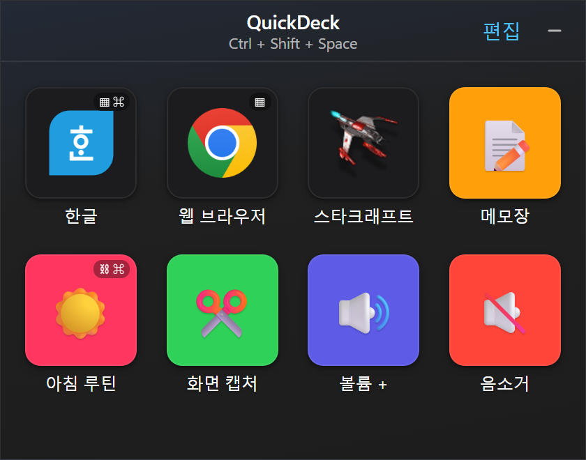
각 단원은 학습 목표 → 개념 설명 → 따라 해 보기 → 확인 문제 순서로 구성되어 있습니다. 처음 쓰는 분은 Ⅰ단원부터 차례대로, 필요한 기능만 찾는 분은 아래에서 바로 찾아가세요.
QuickDeck을 설치하고, 화면 구성과 기본 사용법을 익힙니다.
QuickDeck은 컴퓨터 화면 위에 항상 떠 있는 버튼판입니다. 방송용 장비인 ‘스트림덱’처럼 버튼을 누르면 프로그램이 실행되거나, 단축키가 입력되거나, 정해 둔 작업이 차례대로 실행됩니다. 실물 장비 없이 무료로 쓸 수 있다는 것이 가장 큰 장점입니다.
QuickDeck 버튼을 눌러도 지금 쓰고 있는 창의 포커스를 빼앗지 않습니다. 그래서 메모장에 글을 쓰다가 QuickDeck의 ‘복사’ 버튼을 눌러도, 단축키는 메모장으로 그대로 들어갑니다.
QuickDeck_0.7.0_x64-setup.exe를 더블클릭합니다.새 버전으로 업데이트할 때는 먼저 트레이에서 QuickDeck을 종료한 뒤 설치하세요. 설치 후 버튼이 기본 버튼 8개만 보이면, 편집하지 말고 QuickDeck을 종료했다가 다시 실행하면 원래 버튼이 돌아옵니다. (Ⅷ단원 참고)
| 표시 | 뜻 |
|---|---|
| ▦ | 프로그램 아이콘을 쓴 폴더 |
| ⛓ | 멀티 액션 버튼 |
| ⌘ | 전역 단축키가 붙은 버튼 |
| ⋯ | 길게 누르면 다른 동작을 하는 버튼 |
창 크기는 가장자리를 끌어서 바꿀 수 있습니다. 창을 키우면 아이콘도 함께 커지고, 모든 줄이 창 안에 들어오도록 크기가 자동으로 맞춰집니다.
| 방법 | 설명 |
|---|---|
| 창 토글 단축키 | 어느 프로그램에서든 누르면 창이 나타나고, 다시 누르면 숨습니다. 처음 설치하면 Ctrl+Shift+F12입니다. (Ⅵ단원에서 바꿀 수 있음) |
| 트레이 아이콘 왼쪽 클릭 | 창 보이기 / 숨기기 |
| 트레이 아이콘 오른쪽 클릭 | 보이기/숨기기, 버튼 편집, Windows 시작 시 자동 실행, 업데이트 확인, 종료 |
| 화면 가장자리 자동 숨김 | 설정에서 켜 두면, 창을 화면 왼쪽·오른쪽·위 끝에 붙였을 때 마우스가 떠나면 가장자리로 쏙 들어가고, 마우스를 그 끝에 대면 다시 나옵니다. (Ⅵ단원) |
창 토글 단축키가 다른 프로그램과 겹치면, QuickDeck이 시작할 때 비어 있는 다른 조합으로 자동으로 바꾸고 알림으로 알려 줍니다.
편집 모드에서 버튼을 만들고, 동작과 단축키를 정합니다.
오른쪽 위 편집을 누르면 아이콘이 흔들리며 편집 모드가 됩니다. iPhone 홈 화면을 편집하는 것과 같습니다.
편집하는 동안에는 전역 단축키와 프로그램별 자동 전환이 잠시 멈춥니다. 단축키를 녹화할 때 기존 단축키가 끼어들지 않게 하기 위해서입니다.
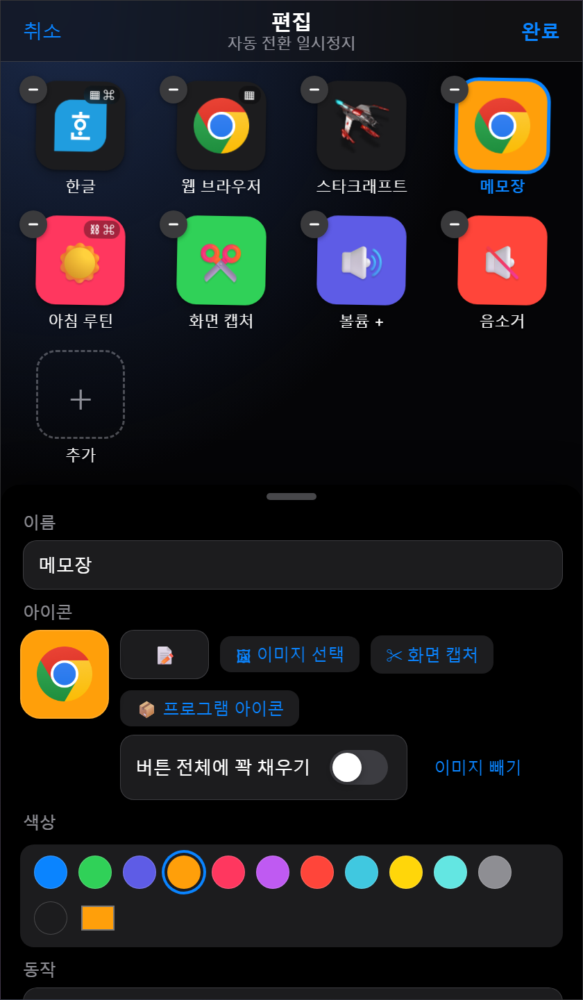
버튼 편집 창의 동작 목록에서 버튼이 할 일을 고릅니다.
| 동작 | 하는 일 | 예시 |
|---|---|---|
| 📂 폴더 | 안에 다른 버튼을 넣습니다. 누르면 폴더 안으로 들어갑니다. | 업무, 한글, 게임 |
| 🚀 프로그램 / 파일 실행 | 프로그램·파일·폴더·바로가기를 엽니다. 이름만 적어도 설치 위치를 찾습니다. | notepad.exe, StarCraft.exe |
| ⌨ 단축키 보내기 | 정해 둔 키 조합을 입력합니다. | ctrl+shift+esc |
| 🌐 웹사이트 열기 | 기본 브라우저로 주소를 엽니다. | https://www.naver.com |
| 📝 텍스트 입력 | 정해 둔 글을 붙여넣습니다. (Ⅴ단원) | 인사말, 서명, 주소 |
| 💻 PowerShell 명령 | 명령을 창 없이 실행합니다. | shutdown /s /t 600 |
| 🔗 멀티 액션 | 위 동작들을 순서대로 실행합니다. (Ⅴ단원) | 앱 실행 → 1초 → 입력 |
| 🔁 토글 | 누를 때마다 두 동작을 번갈아 실행하고, 켜진 동안 이름·아이콘이 바뀝니다. (Ⅶ단원) | 마이크 끄기 ↔ 켜기 |
| 🪟 창 배치 | 지금 쓰던 창을 반쪽·최대화·다른 모니터로 옮깁니다. (Ⅶ단원) | 왼쪽 절반 |
| 🕒 시계 · ⏱ 타이머 · 📈 CPU·메모리 | 버튼에 정보를 보여 줍니다. (Ⅶ단원) | 라면 5분 타이머 |
설정을 바꾼 뒤 저장하기 전에 버튼 편집 창 아래쪽 테스트 실행으로 바로 시험해 볼 수 있습니다.
단축키 칸은 클릭하고 키보드를 누르기만 하면 그대로 기록됩니다. 직접 타자를 칠 필요가 없습니다.
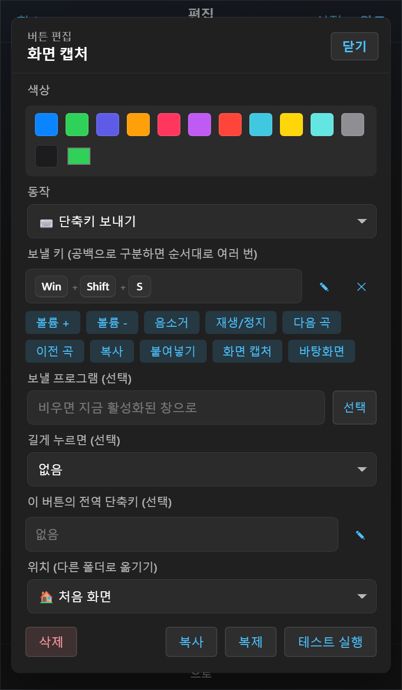
| 이럴 때 | 이렇게 |
|---|---|
| 순서대로 누르는 키 | 이어서 누르면 차례로 추가됩니다. 한글의 표 만들기 Ctrl+N → T |
| 잘못 눌렀을 때 | ⌫ Backspace를 누르면 마지막 조합이 지워집니다. |
| 볼륨·재생 등 특수 키 | 칸 아래 볼륨 +, 음소거, 재생/정지 같은 버튼을 누릅니다. |
| Windows가 가로채는 키 | Win 조합처럼 기록되지 않는 키는 ✎를 눌러 글자로 입력합니다. 예: win+shift+s |
버튼 편집 창 아래쪽 이 버튼의 전역 단축키에 키를 녹화하면, QuickDeck 창이 숨어 있어도 그 키로 버튼을 실행할 수 있습니다. 폴더 버튼에 붙이면 창이 나타나면서 그 폴더가 바로 열립니다.
전역 단축키는 Ctrl·Alt·Shift·Win 중 하나와 함께 눌러야 합니다. 글자 키 하나만 쓰면 다른 프로그램에서 그 글자를 칠 수 없게 되기 때문입니다. (F1~F24, 볼륨 키는 단독 사용 가능)
이모지, 프로그램 아이콘, 사이트 아이콘, 내 이미지로 버튼을 꾸밉니다.
아이콘 칸의 작은 입력 칸에 이모지나 글자를 넣고, 색상에서 버튼 바탕색을 고릅니다. 색상은 많이 쓰는 12가지가 준비되어 있고, 마지막 네모 칸을 누르면 원하는 색을 직접 고를 수 있습니다.
Windows에서 이모지는 Win+.(마침표)를 누르면 고를 수 있습니다.
아래 버튼들은 대상을 정하면 잠시 뒤 아이콘이 자동으로 들어갑니다.
| 버튼 | 들어가는 아이콘 |
|---|---|
| 프로그램 실행 | 그 프로그램의 아이콘 (바로가기 .lnk, Steam .url 포함) |
| 프로그램 연결 폴더 | 연결한 프로그램의 아이콘 |
| 웹사이트 | 그 사이트의 아이콘 |
이미 만든 버튼이 많다면, 편집 모드 오른쪽 위 설정을 눌러 설정 창의 ✨ 모든 버튼에 아이콘 넣기를 누르세요. 폴더 안 버튼까지 한 번에 채웁니다.
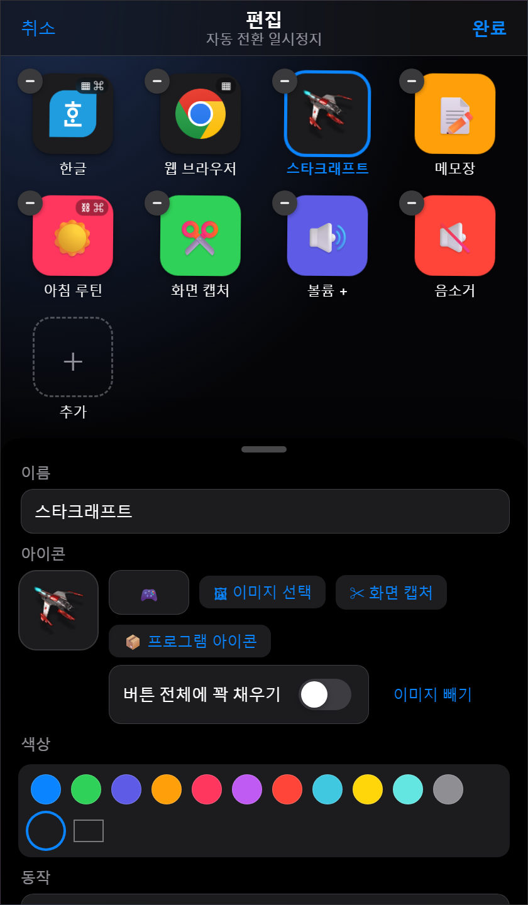
자동으로 들어간 아이콘은 실행할 프로그램이나 주소를 바꾸면 새 아이콘으로 바뀝니다. 하지만 파일·붙여넣기·캡처로 직접 넣은 이미지는 절대 자동으로 바꾸지 않습니다. 단축키·텍스트 버튼은 폴더 안 버튼이 모두 같은 아이콘이 되지 않도록 자동 대상에서 빠집니다. (필요하면 📦 프로그램 아이콘 버튼으로 직접 넣을 수 있습니다.)
| 방법 | 사용법 |
|---|---|
| 🖼 이미지 선택 | 파일 창에서 PNG·JPG·GIF·SVG 등을 고릅니다. |
| 붙여넣기 | 왼쪽 미리보기 칸을 클릭하고 Ctrl+V |
| 끌어다 놓기 | 탐색기의 이미지 파일을 미리보기 칸이나 버튼 위로 끌어 놓습니다. |
| ✂ 화면 캡처 | Windows 캡처 화면이 뜨면 원하는 영역을 드래그합니다. 캡처하는 동안 QuickDeck 창은 잠시 숨습니다. Esc로 취소할 수 있습니다. |
이미지가 들어가면 버튼 전체에 꽉 채우기 스위치로 아이콘 크기와 꽉 찬 모양 중 고를 수 있습니다. 큰 사진도 자동으로 작게 줄여 저장하므로 설정 파일이 커지지 않습니다.
버튼을 폴더로 정리하고, 프로그램에 맞춰 화면이 저절로 바뀌게 합니다.
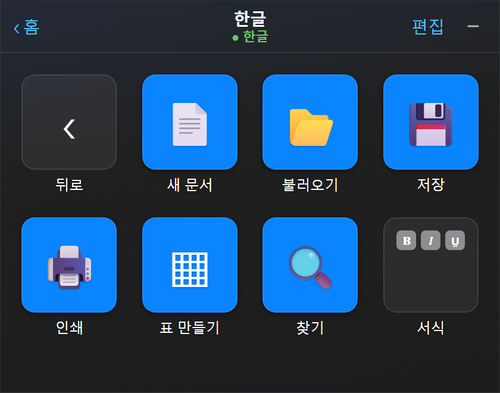
폴더에 프로그램을 연결하면, 그 프로그램이 앞에 올 때 폴더가 저절로 열리고 다른 프로그램으로 옮겨 가면 원래 화면으로 돌아옵니다. 한글을 쓰는 동안에는 한글용 버튼이, 웹 브라우저를 쓰는 동안에는 브라우저용 버튼이 보이는 식입니다.
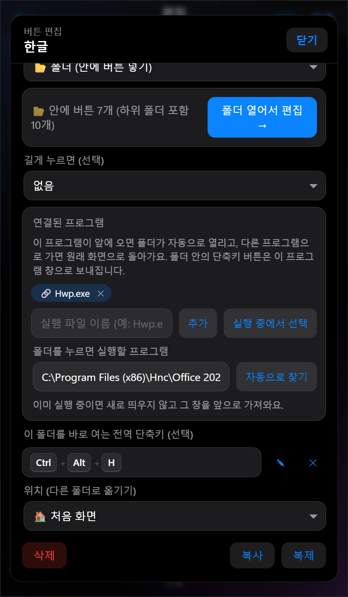
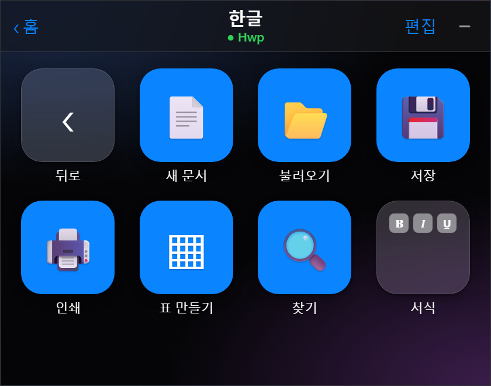
실행 중에서 선택을 누르면 지금 열려 있는 프로그램 목록에서 고를 수 있어 실행 파일 이름을 몰라도 됩니다. 버튼마다 따로 보낼 프로그램을 정할 수도 있습니다.
편집 모드 오른쪽 위 설정을 누르면 설정 창이 열립니다. 프로그램 프리셋 추가에서 프로그램을 고르면, 자주 쓰는 명령 버튼이 담긴 프로그램 연결 폴더가 한 번에 만들어지고 설치된 프로그램의 아이콘도 들어갑니다.
| 프리셋 | 연결 프로그램 | 들어 있는 버튼 (예) |
|---|---|---|
| 한글 | Hwp.exe | 새 문서, 저장, 인쇄, 찾기, 표 만들기, 쪽 번호, 각주, 맞춤법 + 서식 하위 폴더 (부록 B) |
| Word | WINWORD.EXE | 새 문서, 저장, 찾기·바꾸기, 페이지 나누기, 글꼴, 맞춤법 |
| Excel | EXCEL.EXE | 셀 서식, 자동 합계, 필터, 오늘 날짜, 행 삽입, 시트 이동 |
| PowerPoint | POWERPNT.EXE | 새 슬라이드, 슬라이드 복제, 슬라이드 쇼, 그룹 + 발표 중 하위 폴더(다음·이전, 화면 검게, 펜, 레이저 포인터) |
| 메모장 | notepad.exe | 새 탭, 저장, 찾기·바꾸기, 날짜·시간 넣기, 확대·축소 |
| 파일 탐색기 | explorer.exe | 새 폴더, 이름 바꾸기, 경로 복사, 상위 폴더, 미리 보기 창 |
| Zoom | Zoom.exe | 마이크·카메라 켜기/끄기, 화면 공유, 손들기, 채팅, 회의 나가기 |
| Teams | ms-teams·Teams | 마이크·카메라 켜기/끄기, 화면 공유, 손들기, 통화 끊기 |
| 카카오톡 | KakaoTalk.exe | 친구, 채팅, 검색, 잠금 |
| 웹 브라우저 | chrome·msedge·whale·firefox | 새 탭, 탭 닫기, 닫은 탭 열기, 시크릿 창, 주소창 |
| 유튜브 | (없음 · 일반 폴더) | 유튜브 열기, 재생/정지, 10초 앞/뒤, 자막, 빠르게·느리게 |
| 곰·팟플레이어 | GOM·PotPlayer | 재생/정지, 앞/뒤로, 배속, 전체 화면, 소리 |
| Photoshop | Photoshop.exe | 이동·브러시·지우개·문자, 브러시 크기, 새 레이어, 자유 변형 |
| Figma · Canva | Figma.exe · Canva.exe | 도형·텍스트 도구, 그룹·그룹 해제, 복제 |
| OBS Studio | obs64.exe | 방송·녹화 시작/중지, 장면 전환, 마이크 (OBS에서 Ctrl+Alt+1~6 지정 필요) |
| VS Code | Code.exe | 명령 팔레트, 파일 찾기, 터미널, 코드 정리, 주석 |
| Windows 기본 | (없음 · 일반 폴더) | 화면 캡처, 바탕화면, 클립보드 기록, 이모지, 설정, 화면 잠금 |
유튜브와 Windows 기본은 특정 프로그램에 연결되지 않은 일반 폴더입니다. 유튜브 버튼은 영상이 열린 브라우저 창을 한 번 클릭해 둔 뒤 누르세요. OBS는 기본 단축키가 없어서, 추가하면 OBS 설정 → 단축키에서 버튼과 같은 키를 지정하라는 안내가 나옵니다.
프리셋으로 만든 버튼도 일반 버튼처럼 고치고 지울 수 있습니다. 프로그램 설정에서 단축키를 바꿔 쓰고 있다면 버튼의 키도 그에 맞게 고치세요.
여러 동작을 한 번에 실행하고, 자주 쓰는 글을 버튼 하나로 입력합니다.
notepad.exe → ⏱ 기다리기 1초 → 📝 텍스트 ‘오늘 할 일:’프로그램 실행은 창이 다 뜰 때까지 기다리지 않습니다. 실행 바로 뒤에 키 입력이 있으면 기다리기 단계(보통 0.5~1.5초)를 꼭 넣으세요.
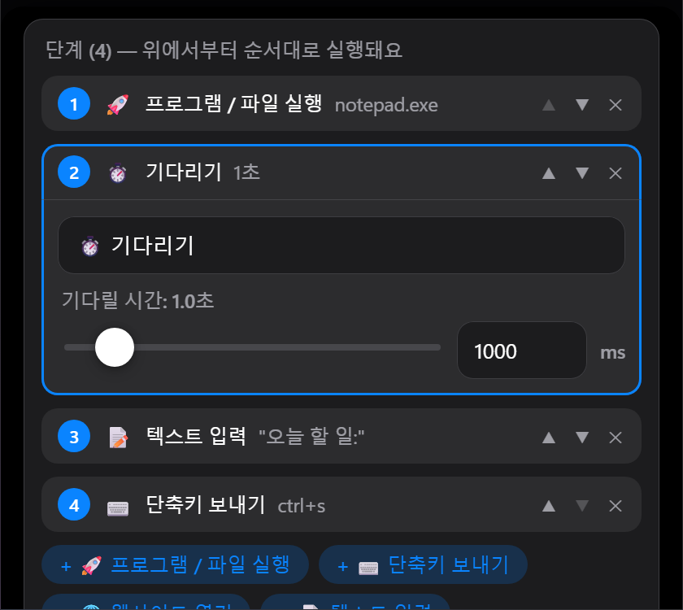
중간 단계가 실패하면 “3번째 단계 실패: …”처럼 몇 번째인지 알려 주고 멈춥니다. 기다리기는 한 단계에 최대 60초이고, 멀티 액션 안에 멀티 액션이나 폴더는 넣을 수 없습니다.
| 방식 | 설명 |
|---|---|
| 붙여넣기 (기본) | 글을 클립보드에 넣고 Ctrl+V로 붙여넣은 뒤, 원래 복사해 둔 내용을 다시 돌려놓습니다. 한글 입력기 상태와 상관없이 긴 한글 문장도 깨지지 않습니다. |
| 한 글자씩 입력 | 붙여넣기를 막아 둔 프로그램(일부 보안 입력 칸 등)용입니다. ‘한 글자씩 입력하기’ 스위치를 켭니다. |
자주 쓰는 인사말, 이메일 서명, 집 주소, 계좌 안내문 등을 버튼으로 만들어 두면 편리합니다. 단, 비밀번호처럼 민감한 정보는 버튼에 저장하지 마세요.
화면 테마와 칸 수를 바꾸고, 버튼을 복제·백업·복원합니다.
편집 모드에서 오른쪽 위 설정을 누르면 전체 설정 창이 열립니다.
| 설정 | 설명 |
|---|---|
| 화면 테마 | 자동(Windows 설정 따라감) / 밝게 / 어둡게는 차분한 Windows 11 스타일입니다. 분위기가 다른 테마 칠판 · 고대비 · 네온 · 다이어리 · 파스텔 · 레트로 픽셀과 색다른 스타일 배민 · 카톡 · 토스 · 라인도 있습니다. 카드를 누르는 즉시 미리 보입니다. |
| 창 투명도 | 20~100%. 슬라이더를 움직이는 동안 미리 보입니다. |
| 마우스를 올리면 선명하게 | 평소엔 흐릿하다가 마우스를 올리면 또렷해집니다. |
| 가장자리 자동 숨김 | 화면 끝에 붙여 둔 창이 마우스가 떠나면 숨고, 끝에 대면 나옵니다. |
| 창 보이기/숨기기 단축키 | 칸을 클릭하고 원하는 조합을 누릅니다. |
| 한 줄에 버튼 수 | 2~8칸 사이로 고릅니다. |
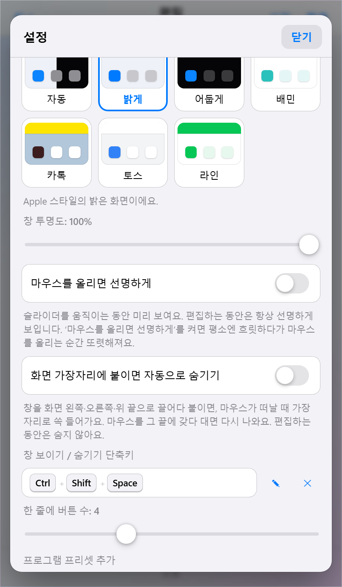
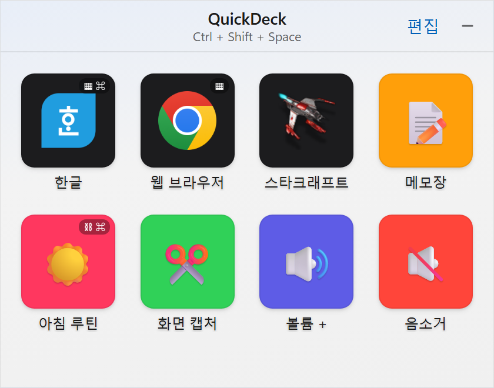
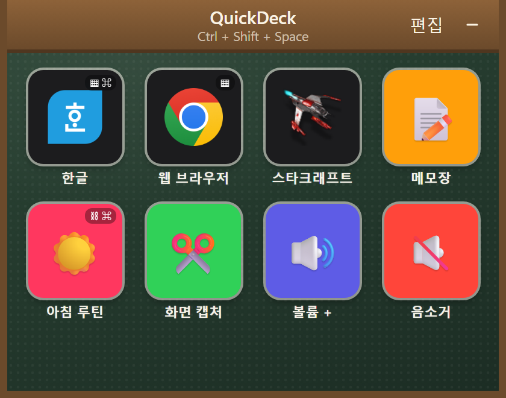
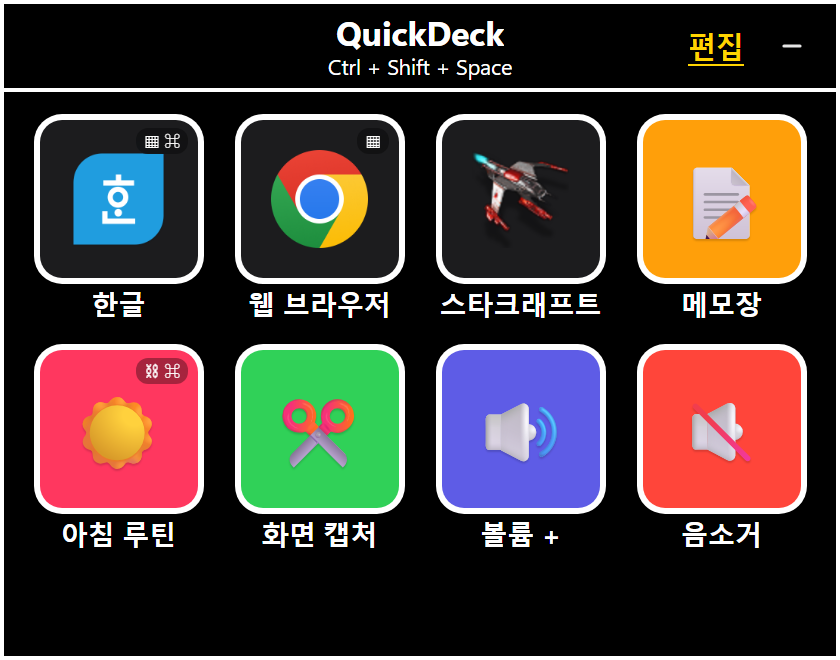
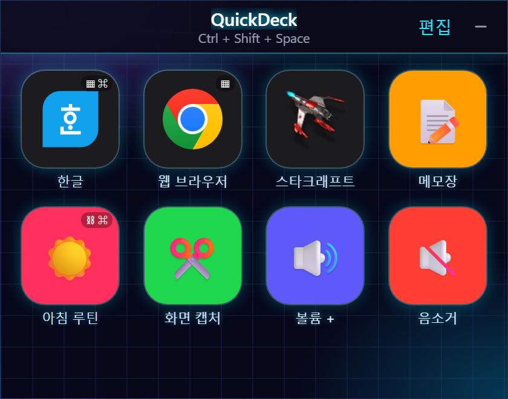
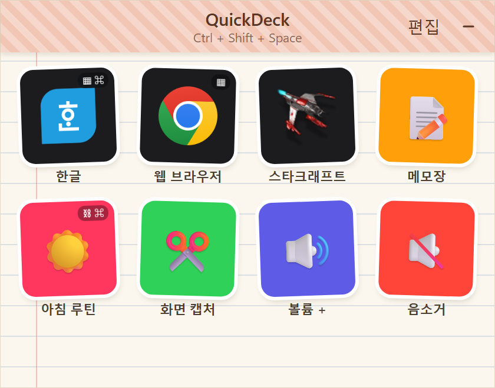
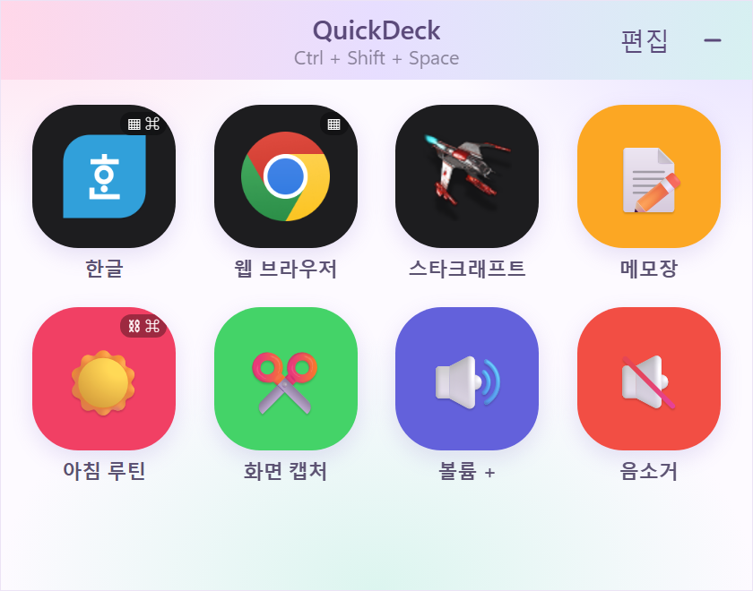
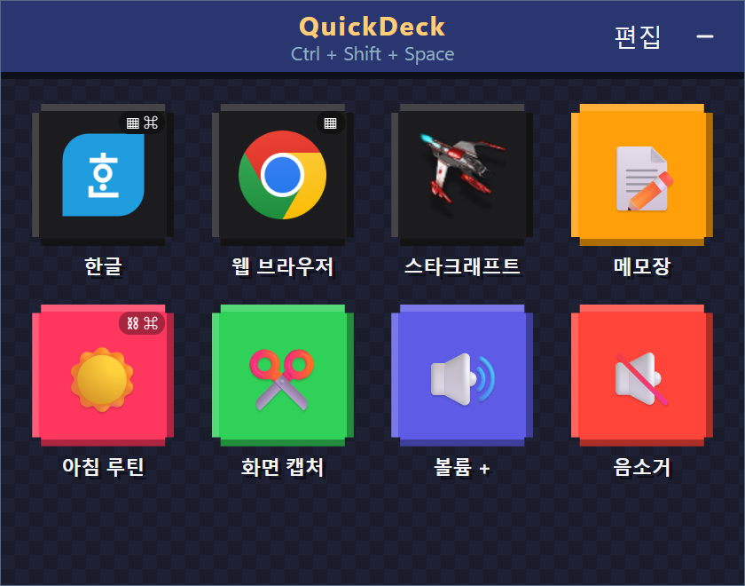
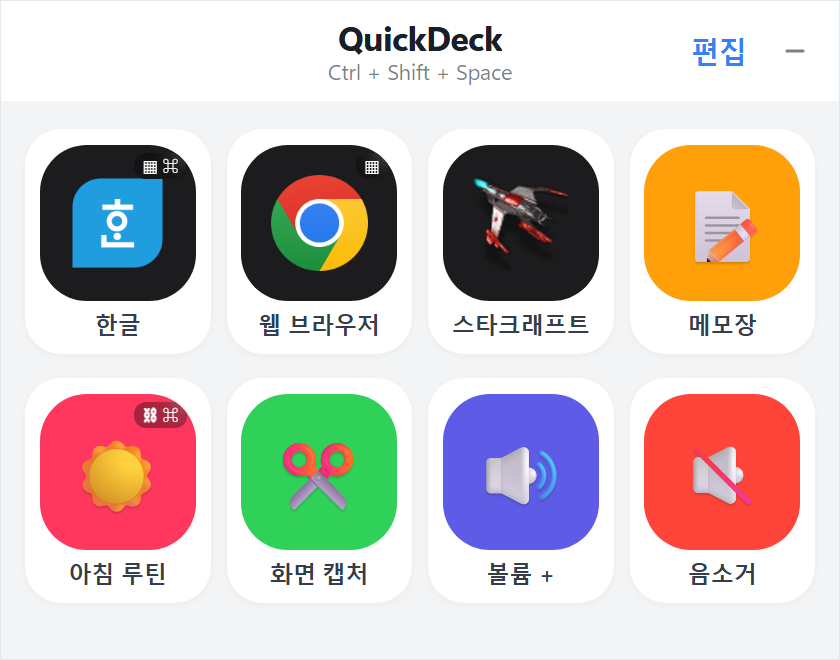
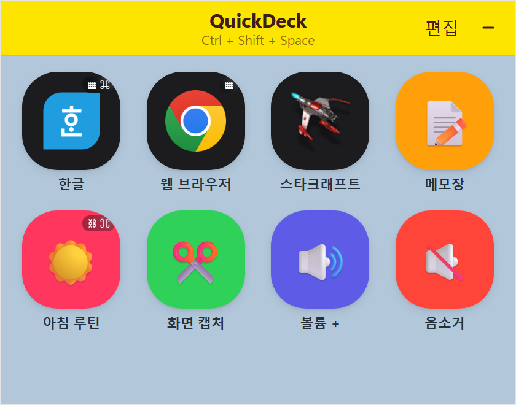
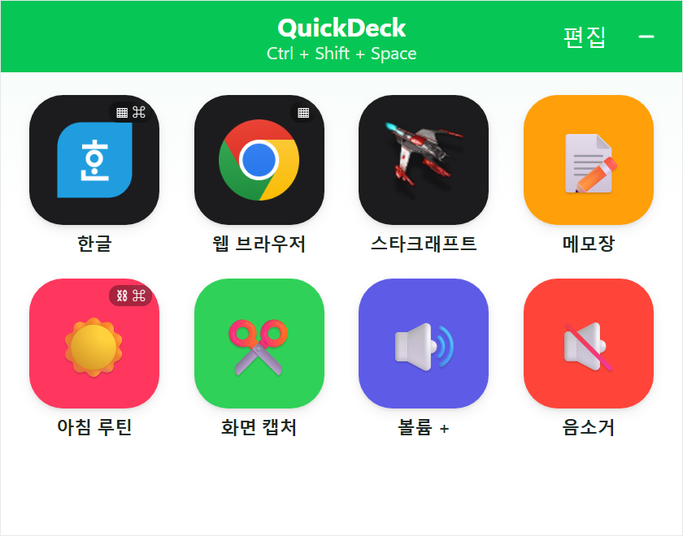
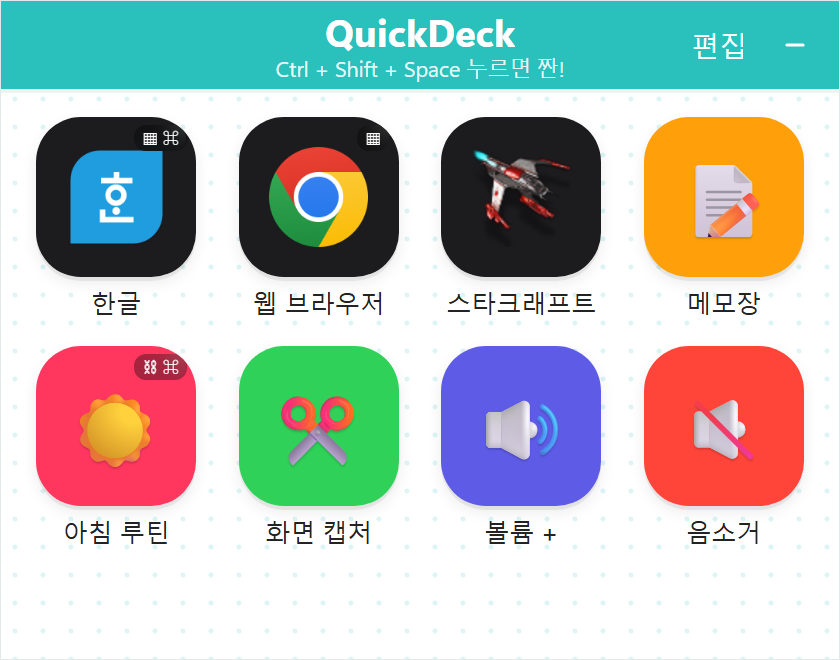
칠판은 교실 화면에, 고대비는 프로젝터나 멀리서 볼 때(검은 바탕에 굵은 테두리와 큰 글씨), 네온은 방송·발표 무대에 잘 어울립니다.
배민·카톡·토스·라인 스타일 테마는 그 서비스의 색감과 분위기만 빌려 온 것입니다. 로고·캐릭터·이름은 들어 있지 않으며, 글씨는 모든 테마가 같은 기본 글꼴을 씁니다. 배민 스타일에서는 알림 문구도 조금 재치 있게 바뀝니다.
창 투명도를 낮추면 뒤에 있는 문서가 비쳐 보여서, 버튼판을 띄워 둔 채로 작업하기 좋습니다. ‘마우스를 올리면 선명하게’를 함께 켜면 쓸 때만 또렷해집니다.
모니터가 여러 대라 그쪽에 다른 모니터가 이어져 있으면, 그 방향으로는 숨지 않습니다.
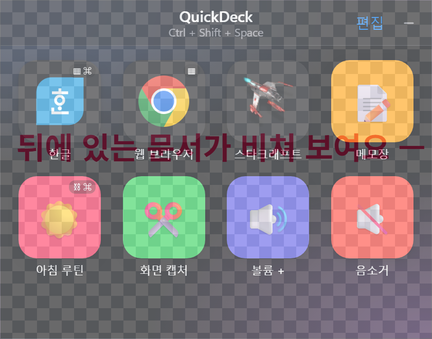
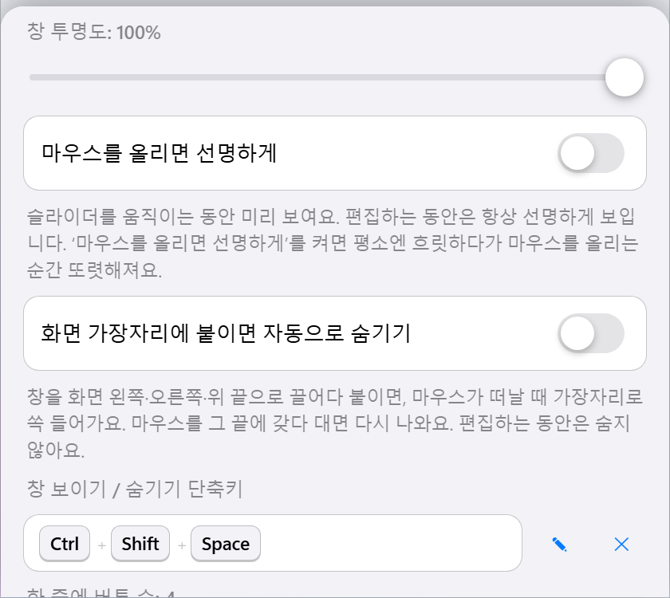
| 기능 | 단축키 | 설명 |
|---|---|---|
| 복제 | Ctrl+D | 선택한 버튼 바로 옆에 복사본을 만듭니다. |
| 복사 | Ctrl+C | 선택한 버튼을 기억해 둡니다. 다른 폴더로 옮겨 가서 붙여넣으세요. |
| 붙여넣기 | Ctrl+V | 지금 화면에 붙여넣습니다. 편집 모드의 📋 붙여넣기 칸을 눌러도 됩니다. |
| 되돌리기 | Ctrl+Z | 방금 한 편집(삭제, 이동, 이름 바꾸기 등)을 취소합니다. 여러 번 누르면 계속 거슬러 올라갑니다. |
| 다시 실행 | Ctrl+Y | 되돌린 것을 다시 적용합니다. (Ctrl+Shift+Z도 됩니다.) |
글자 입력 칸 안에서 Ctrl+Z를 누르면 그 칸의 글자만 되돌립니다. 버튼 편집을 되돌리려면 빈 곳을 한 번 클릭한 뒤 누르세요.
폴더를 복사하면 안의 버튼까지 통째로 복사됩니다. 같은 단축키가 두 버튼에 걸려 충돌하지 않도록, 복사본의 전역 단축키는 비워 둡니다.
%APPDATA%\com.deck.streamdeck\config.json, 백업은 같은 곳의 backups 폴더QuickDeck은 켤 때, 그리고 켜 둔 동안 4시간마다 새 버전이 있는지 확인합니다. 새 버전이 나오면 창이 트레이나 화면 가장자리에 숨어 있어도 저절로 나타나 아래쪽에 알림 줄을 보여 줍니다. 알림 줄에는 새 버전 번호와 무엇이 바뀌었는지가 한 줄로 나옵니다.
업데이트 파일은 만든 사람의 전자 서명이 맞을 때만 설치됩니다. 중간에 누가 파일을 바꿔치기해도 설치되지 않으니 안심하세요. 버튼과 설정은 업데이트해도 그대로 남습니다.
휴대폰으로 PC를 조작하고, 상태에 따라 모양이 바뀌는 버튼을 만듭니다.
휴대폰에 앱을 설치할 필요가 없습니다. PC의 QuickDeck이 작은 웹 서버가 되고, 휴대폰은 브라우저로 접속합니다.
PC와 휴대폰이 같은 와이파이에 있어야 합니다(와이파이가 없으면 아래 USB로 연결하기). 주소에 들어 있는 열쇠(긴 영문·숫자)가 있어야만 조작할 수 있으니, 주소를 남에게 보내지 마세요. 주소가 새어 나갔다면 열쇠 새로 만들기를 누르면 예전 주소는 바로 막힙니다.
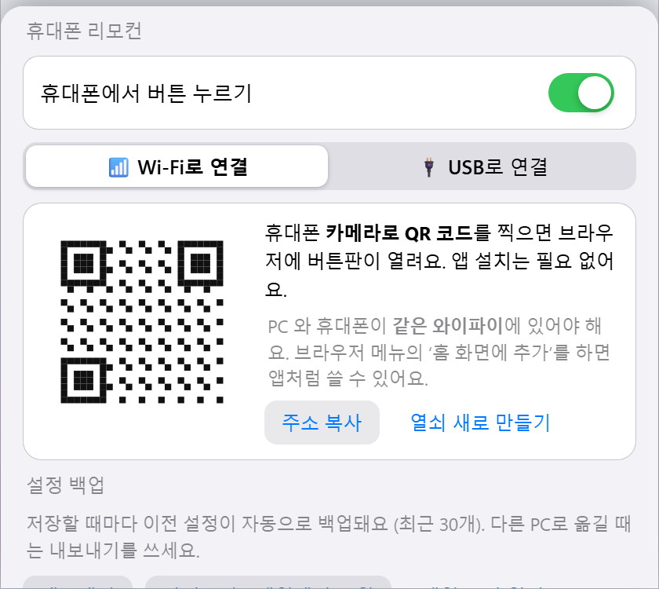
휴대폰 화면 오른쪽 위 ⚙에서 다음을 정할 수 있습니다. 이 설정은 휴대폰마다 따로 기억됩니다.
| 설정 | 설명 |
|---|---|
| PC 따라 자동 전환 | PC에서 한글을 쓰면 휴대폰도 한글 폴더로 바뀝니다. (프로그램 연결 폴더, Ⅳ단원) |
| 버튼 크기 | 작게·보통·크게·아주 크게 중에서 고릅니다. 크게 할수록 버튼이 커지고 한 줄에 들어가는 개수가 줄어듭니다. 멀리서 보거나 큰 손가락으로 누를 때는 크게, 버튼이 많으면 작게 하세요. |
| 전체 화면으로 보기 | 주소창 없이 화면을 꽉 채워 봅니다. 위쪽 ⛶ 버튼으로 바로 켜고 끌 수도 있습니다. 켜 두면 다음에 리모컨을 열 때 화면을 한 번 누르면 전체 화면이 됩니다. 아이폰은 공유 버튼 → 홈 화면에 추가로 만든 아이콘으로 열면 주소창 없이 보입니다. |
| 화면 켜두기 | 리모컨을 쓰는 동안 휴대폰 화면이 꺼지지 않게 합니다. |
| 시작 폴더 | 열 때 처음 보일 폴더를 지금 보고 있는 폴더로 정합니다. 발표용 휴대폰은 ‘발표’ 폴더로 시작하게 하면 편합니다. |
휴대폰을 가로로 돌리면 한 줄에 버튼이 두 칸 더 들어갑니다. PC에서 버튼을 바꾸고 완료를 누르면 휴대폰 화면도 1~2초 안에 저절로 바뀝니다.
학교 와이파이가 기기끼리 접속을 막아 두었거나, PC는 유선이고 휴대폰은 다른 망일 때는 USB 케이블로 연결하세요. 휴대폰의 USB 테더링을 켜면 PC와 휴대폰 사이에 둘만의 작은 네트워크가 생깁니다. 공유기를 거치지 않아 반응이 빠르고, 연결된 동안 휴대폰이 충전됩니다.
와이파이로만 인터넷을 쓰는 노트북은 테더링을 켜는 동안 PC의 인터넷이 휴대폰 데이터로 바뀔 수 있습니다. 유선 랜을 쓰는 교실 PC는 보통 그대로입니다. 관리자 권한이 없는 PC라면 설정 → 네트워크 및 인터넷 → 이더넷에서 휴대폰 연결(예: ‘이더넷 3’)을 개인 네트워크로 바꿔도 됩니다. 아이폰은 요금제에 따라 개인용 핫스팟 메뉴가 막혀 있을 수 있습니다.
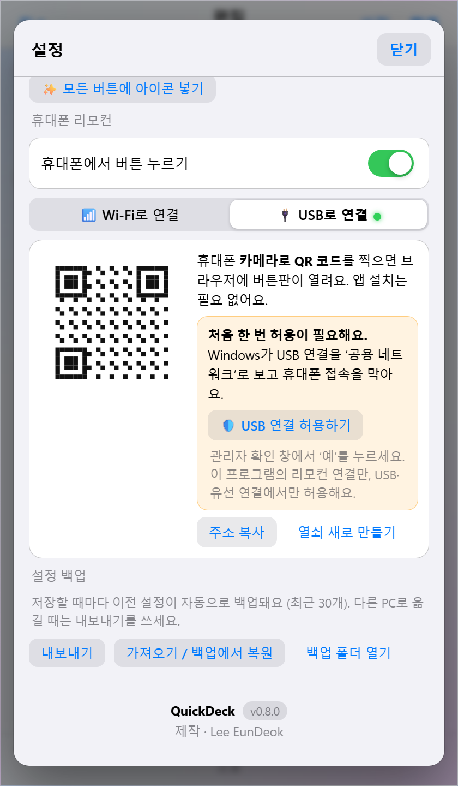
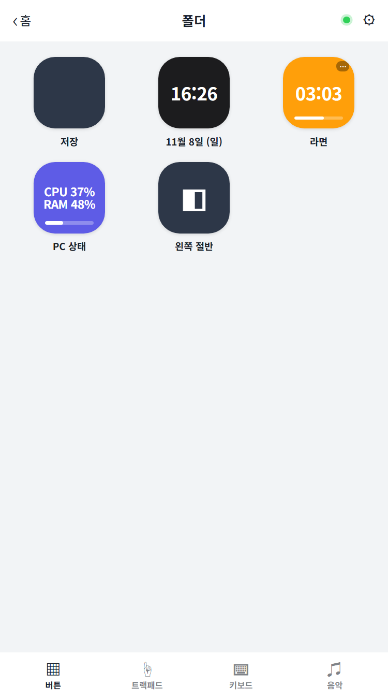
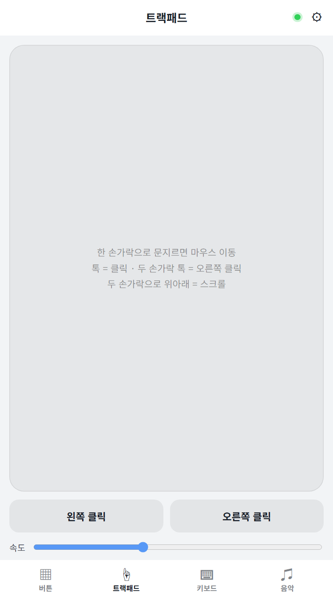
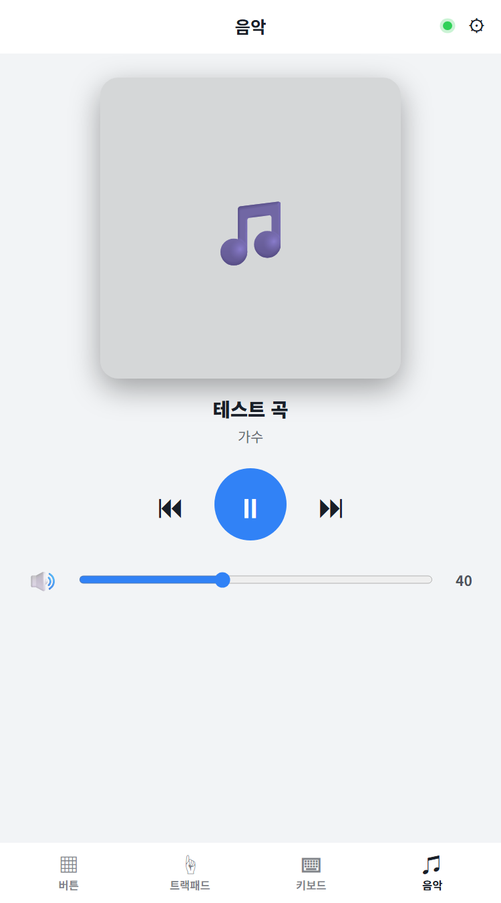
| 탭 | 할 수 있는 일 |
|---|---|
| 버튼 | PC와 똑같은 버튼판. 폴더에 들어가고, 길게 누르기도 됩니다. |
| 트랙패드 | 한 손가락으로 끌면 마우스 이동, 톡 치면 왼쪽 클릭, 두 손가락으로 톡 치면 오른쪽 클릭, 두 손가락으로 끌면 스크롤. 톡 하고 바로 다시 대고 끌면 끌어 놓기(파일·창 옮기기). 아래 ✊ 잡고 끌기 버튼을 누르면 누른 채로 고정되고, 옮긴 뒤 놓기(또는 화면 톡)로 내려놓습니다. 속도 조절도 됩니다. |
| 키보드 | 휴대폰으로 글을 써서 PC로 보내기(한글도 그대로). Enter·Esc·Tab·방향키·복사/붙여넣기 같은 빠른 키 버튼. |
| 음악 | 지금 PC에서 재생 중인 곡의 제목·가수·앨범 그림, 이전/재생/다음, 볼륨 슬라이더와 음소거. |
발표할 때 트랙패드 탭으로 슬라이드를 넘기거나, 침대에서 영화를 볼 때 음악 탭으로 볼륨을 조절해 보세요.
휴대폰 리모컨 아래의 보내기 탭에서 사진이나 파일을 보내면 PC에 바로 저장됩니다. 서류를 찍어 한글 문서에 붙이거나, 휴대폰의 PDF를 PC로 옮길 때 카카오톡 '나와의 채팅'을 거치지 않아도 됩니다.
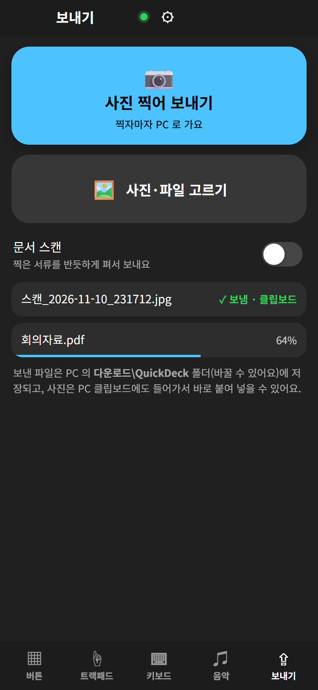
| 기능 | 설명 |
|---|---|
| 사진 찍어 보내기 | 휴대폰 카메라로 찍자마자 PC로 보냅니다. |
| 사진·파일 고르기 | 앨범의 사진이나 PDF·한글 파일 등을 여러 개 골라 한 번에 보냅니다. 파일 하나에 500MB까지 됩니다. |
| 문서 스캔 | 비스듬히 찍은 서류를 네 모서리에 맞춰 반듯한 직사각형으로 폅니다. 선명한 흑백은 종이를 하얗게, 글씨를 진하게 만들어 복사본처럼 보이게 합니다. |
| 저장 위치 | 기본은 PC의 다운로드\QuickDeck 폴더입니다. 편집 → 설정 → 휴대폰 리모컨의 휴대폰에서 받은 파일에서 폴더 열기나 다른 폴더로 바꿀 수 있습니다. |
| 클립보드 | 사진 한 장을 보내면 PC 클립보드에 사진이 들어가서, 한글·메신저에 Ctrl+V로 바로 붙습니다. 세로로 찍은 사진도 세로로 붙습니다. 여러 장을 한 번에 고르면 클립보드에 모두 들어갑니다. 한글·Claude·메신저·탐색기에 Ctrl+V 하면 사진이 한꺼번에 들어갑니다. 카카오톡처럼 한 장씩만 받는 곳에는 휴대폰 보내기 탭(또는 PC 창 아래)의 한 장씩을 누르세요. 첫 사진이 클립보드에 들어가고, 붙여 넣은 뒤 다음 ▶을 누르면 다음 사진으로 바뀝니다. 모두를 누르면 다시 전부가 들어갑니다. 끄려면 설정의 받은 파일을 클립보드에도 넣기를 끄세요. |
| 보냈는지 확인 | 보내는 동안 화면 가운데에 진행률이 나오고, 다 보내면 ✅ PC로 보냈어요와 보낸 사진 미리보기가 잠깐 뜹니다. 실패하면 ❌와 이유, 다시 보내기 버튼이 나옵니다. 아래 보낸 파일 목록은 목록 지우기로 지울 수 있습니다(PC에 저장된 파일은 그대로). |
같은 이름의 파일이 있으면 덮어쓰지 않고 '이름 (1)'처럼 새 이름으로 저장합니다. 카메라가 붙이는 뜻 없는 이름은 '사진_날짜_시각', 스캔한 서류는 '스캔_날짜_시각'으로 바뀝니다. 아이폰의 HEIC 사진은 문서 스캔 없이 원본 그대로 보냅니다.
토글은 전등 스위치처럼 누를 때마다 켜짐·꺼짐이 바뀌는 버튼입니다. 켜진 동안은 아이콘 아래에 초록 점이 생기고, 이름과 아이콘이 바뀝니다.
win+alt+k를 넣습니다.길게 누르기는 버튼 하나에 동작을 하나 더 넣는 기능입니다. 버튼 편집 창의 길게 누르면에서 동작을 고르면, 버튼을 0.5초 이상 누르고 있을 때 그 동작이 실행됩니다. 오른쪽 위에 ⋯ 표시가 붙습니다.
예: ‘볼륨 +’ 버튼을 길게 누르면 음소거. 휴대폰에서도 똑같이 길게 누르면 됩니다(살짝 진동).
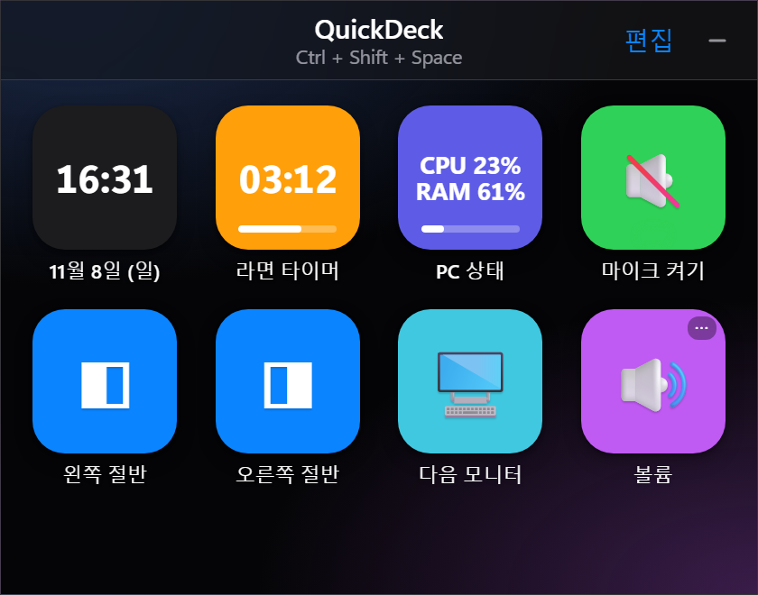
| 위젯 | 버튼에 보이는 것 | 누르면 |
|---|---|---|
| 🕒 시계 | 지금 시각(크게)과 오늘 날짜(이름 자리) | 아무 일도 없음 |
| ⏱ 타이머 | 남은 시간과 줄어드는 막대 | 시작 / 일시정지. 길게 누르면 처음으로 |
| 📈 CPU·메모리 | CPU와 메모리 사용률 (1초마다) | 아무 일도 없음 |
타이머는 버튼 편집 창에서 시간을 분 단위로 정합니다. 1·3·5·10·25·50분 버튼으로 바로 고를 수도 있습니다.
시간이 다 되면 PC에서 알림음과 함께 “⏰ 라면 타이머 끝났어요!” 알림이 뜨고, 버튼이 깜빡입니다. 휴대폰 리모컨을 열어 두었다면 휴대폰도 진동합니다.
25분 타이머로 ‘집중 25분 + 휴식 5분’ 공부법(뽀모도로)을 해 보세요. 창을 닫아 두어도 타이머는 계속 돌아갑니다.
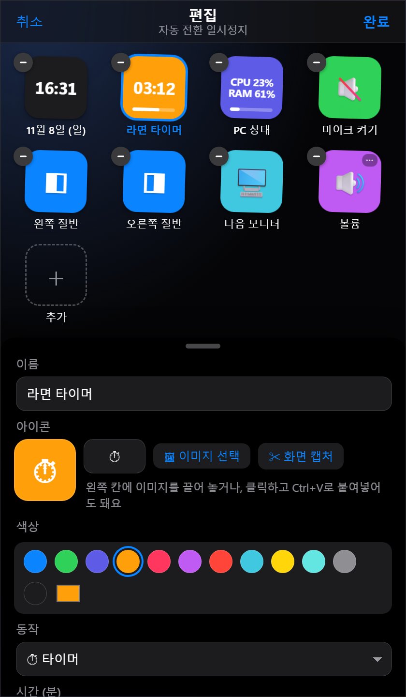
🪟 창 배치 동작은 바로 전에 쓰던 창을 원하는 자리로 옮깁니다. QuickDeck은 포커스를 빼앗지 않기 때문에, 문서를 보다가 버튼을 누르면 그 문서 창이 옮겨집니다.
| 방법 | 설명 |
|---|---|
| ◧ 왼쪽 절반 / ◨ 오른쪽 절반 | 화면(작업 표시줄 제외)의 왼쪽 또는 오른쪽 반을 꽉 채웁니다. 두 창을 나란히 놓을 때 좋습니다. |
| ⬜ 최대화 / ➖ 최소화 | 창을 크게 하거나 작업 표시줄로 내립니다. |
| ⊡ 가운데로 | 크기는 그대로 두고 화면 가운데로 옮깁니다. |
| 🖥 다음 모니터로 | 모니터가 여러 대일 때, 같은 비율·위치로 다음 모니터에 옮깁니다. |
멀티 액션에 ‘창 배치’를 넣을 수도 있습니다. 예: 한글 실행 → 1초 기다리기 → 왼쪽 절반, 브라우저 실행 → 1초 → 오른쪽 절반. 버튼 하나로 작업 화면이 완성됩니다.
자주 생기는 문제와 해결 방법을 정리했습니다.
| 증상 | 원인과 해결 |
|---|---|
| 창 토글 단축키가 안 된다 | 다른 프로그램이 같은 단축키를 쓰고 있을 수 있습니다. 편집 → 설정에서 다른 조합으로 바꾸세요. 시작할 때 자동으로 바뀌었다면 알림에 새 단축키가 나옵니다. |
| “창을 앞으로 가져오지 못했습니다” | 대상 프로그램이 관리자 권한으로 실행 중이면 Windows 보안 정책 때문에 키를 보낼 수 없습니다. 대상 프로그램을 일반 권한으로 실행하세요. |
| “프로그램이 실행 중이 아닙니다” | 폴더에 연결한 프로그램이 꺼져 있습니다. 먼저 실행하거나, 폴더 설정의 폴더를 누르면 실행할 프로그램을 채워 두세요. |
| 이름만 넣은 프로그램이 실행되지 않는다 | 설치 위치를 찾지 못한 경우입니다. 실행 파일 전체 경로나 바탕화면 바로가기(.lnk) 경로를 넣으세요. |
| 게임 중에 창이 안 보인다 | 단독 전체화면 게임 위에는 창이 표시되지 않습니다. 전역 단축키는 그대로 동작합니다. 게임을 ‘창 모드 전체화면’으로 바꾸면 보입니다. |
| 업데이트 후 버튼이 기본 8개만 보인다 | 설치 직후 설정 파일을 잠깐 읽지 못한 경우입니다. 버튼은 지워지지 않았습니다. 편집하지 말고 트레이에서 종료 후 다시 실행하세요. 그래도 안 되면 Ⅵ단원의 ‘백업에서 복원’을 쓰세요. |
| 텍스트가 이상하게 입력된다 | 붙여넣기를 막아 둔 입력 칸일 수 있습니다. 버튼의 ‘한 글자씩 입력하기’를 켜 보세요. |
| Win 키 조합이 녹화되지 않는다 | Windows가 먼저 가로채는 키입니다. ✎를 눌러 win+shift+s처럼 글자로 입력하세요. |
| 휴대폰에서 주소가 열리지 않는다 | PC와 휴대폰이 같은 와이파이인지 확인하세요. 회사·학교 와이파이는 기기끼리 접속을 막아 둔 경우가 많습니다. 이럴 때는 휴대폰을 USB로 연결하고 테더링을 켜세요(Ⅶ단원 01). Windows 방화벽에서 QuickDeck을 허용했는지도 확인하세요. |
| USB QR 코드를 찍으면 주소는 뜨는데 연결이 안 된다 | Windows 방화벽이 USB 연결(공용 네트워크)을 막고 있습니다. QR 옆의 USB 연결 허용하기를 누르고 관리자 확인 창에서 예를 누르세요. 관리자 권한이 없으면 설정 → 네트워크 및 인터넷 → 이더넷에서 휴대폰 연결을 개인 네트워크로 바꾸세요. |
| ‘USB로 연결’ 탭에 QR 코드가 나오지 않는다 | 휴대폰에서 USB 테더링(아이폰은 개인용 핫스팟)을 켰는지 확인하세요. 충전 전용 케이블은 데이터가 통하지 않으니 다른 케이블로 바꿔 보세요. 아이폰은 PC에 Apple Devices(또는 iTunes) 앱이 설치되어 있어야 USB 테더링이 잡힙니다. |
| 휴대폰에 “열쇠가 맞지 않아요” | PC에서 열쇠를 새로 만든 경우입니다. 새 QR 코드를 다시 찍으세요. |
| 창 배치 버튼이 창을 못 옮긴다 | 관리자 권한으로 실행된 창은 옮길 수 없습니다. 또 바로 전에 쓴 창이 없으면(바탕화면만 클릭한 경우) 옮길 창이 없다고 알려 줍니다. |
| 가장자리에 붙였는데 숨지 않는다 | 설정에서 자동 숨김이 켜져 있는지, 그 방향에 다른 모니터가 이어져 있지 않은지 확인하세요. 편집하는 동안은 숨지 않습니다. |
| 웹사이트 아이콘이 안 들어간다 | 인터넷 연결을 확인하세요. 아이콘을 제공하지 않는 사이트도 있습니다. 이때는 이미지를 직접 넣으세요. |
설치할 때 “Windows의 PC 보호” 경고가 뜨는 것은 코드 서명 인증서가 없는 프로그램이기 때문입니다. 직접 만든 설치 파일이라면 추가 정보 → 실행을 눌러 설치하면 됩니다.
보낼 키 이름표, 한글 프리셋 단축키, 확인 문제 정답
✎ 직접 입력으로 단축키를 쓸 때는 아래 이름을 +로 이어 씁니다. 공백으로 나누면 순서대로 누릅니다. 예: ctrl+shift+esc, ctrl+n t
| 이름 | 키 |
|---|---|
| ctrl, alt, shift, win | 수정키 |
| enter, esc, tab, space | Enter, Esc, Tab, 스페이스 |
| backspace, delete, insert | 지우기, Del, Ins |
| home, end, pageup, pagedown | 이동 키 |
| up, down, left, right | 방향키 |
| f1 ~ f24 | 기능 키 |
| 이름 | 키 |
|---|---|
| a ~ z, 0 ~ 9 | 글자·숫자 |
| numpad0 ~ numpad9 | 숫자 키패드 |
| volumeup, volumedown, mute | 볼륨 +, −, 음소거 |
| playpause, next, prev | 재생/정지, 다음 곡, 이전 곡 |
| printscreen | PrtSc |
| minus, equal, comma, period, slash, semicolon | - = , . / ; |
한컴오피스 한글 기본 단축키 기준입니다. (출처: 한컴 도움말 단축키 일람) ‘A, B’는 A를 누르고 뗀 뒤 B를 누르는 겹글쇠입니다.
| 버튼 | 단축키 |
|---|---|
| 새 문서 | Alt+N |
| 불러오기 | Alt+O |
| 저장 | Alt+S |
| 다른 이름으로 | Alt+V |
| 인쇄 | Alt+P |
| 되돌리기 | Ctrl+Z |
| 찾기 | Ctrl+Q, F |
| 찾아 바꾸기 | Ctrl+H |
| 쪽 나누기 | Ctrl+Enter |
| 표 만들기 | Ctrl+N, T |
| 그림 넣기 | Ctrl+N, I |
| 쪽 번호 | Ctrl+N, P |
| 버튼 | 단축키 |
|---|---|
| 각주 | Ctrl+N, N |
| 편집 용지 | F7 |
| 맞춤법 | F8 |
| 글자 모양 | Alt+L |
| 문단 모양 | Alt+T |
| 스타일 | F6 |
| 진하게 / 기울임 / 밑줄 | Ctrl+B / I / U |
| 왼쪽 / 가운데 정렬 | Ctrl+Shift+L / C |
| 오른쪽 / 양쪽 정렬 | Ctrl+Shift+R / M |
| 글자 크게 / 작게 | Ctrl+] / Ctrl+[ |
ctrl+n t)